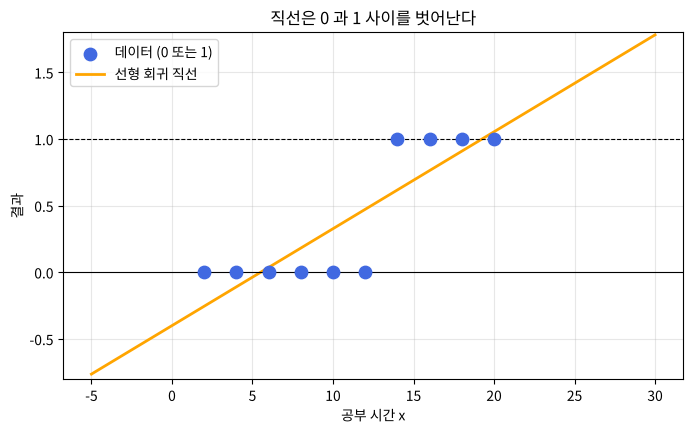
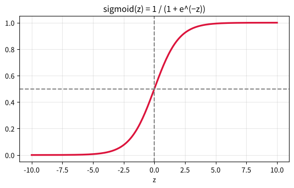
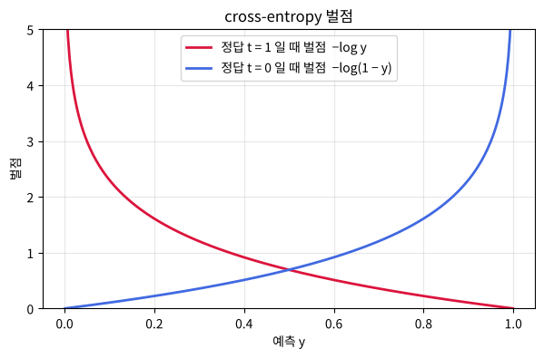

제 8 편
로지스틱 회귀 - 합격일까 불합격일까? (분류)#
근거 자료: 박성호, 「Logistic Regression (I) - concept • cross-entropy」 (C.pptx = ML_LEC_16), 「Logistic Regression (II) - example」 (ML_LEC_17)
학습 목표#
분류(classification) 문제에서 sigmoid 함수가 필요한 이유를 설명하고 함숫값을 계산할 수 있다.
손실함수 cross-entropy 가 정답과 예측의 차이를 어떻게 벌점으로 바꾸는지 이해한다.
로지스틱 회귀를 파이썬으로 학습시켜 합격/불합격을 예측하고, 결정 경계의 의미를 해석할 수 있다.
지난 시간 복습#
제 7편: 선형 회귀 \(y = Wx + b\) 를 경사하강법으로 학습시켜 점수(연속적인 숫자) 를 예측했습니다.
오늘은 합격(1) / 불합격(0) 처럼 종류를 맞히는 분류 문제입니다.
핵심 정리#
① sigmoid 함수
\(\displaystyle \mathrm{sigmoid}(z) = \frac{1}{1 + e^{-z}}\)
\(0 < \mathrm{sigmoid}(z) < 1\), \(\displaystyle \mathrm{sigmoid}(0) = \frac{1}{2}\)
\(\mathrm{sigmoid}(-z) = 1 - \mathrm{sigmoid}(z)\)
\(z \to \infty\) 이면 1 에, \(z \to -\infty\) 이면 0 에 가까워진다.
② 로지스틱 회귀
\(z = Wx + b\), \(y = \mathrm{sigmoid}(z) =\) (결과가 1 일 확률), \(y \ge 0.5\) 이면 1 로 판단
\(\displaystyle y = 0.5 \Leftrightarrow z = 0 \Leftrightarrow x = -\frac{b}{W}\) 가 결정 경계 이다.
\(W\) 가 클수록 곡선이 가파르고, \(b\) 가 바뀌면 곡선이 좌우로 이동한다. (아래 애니메이션 1)
공부 시간 데이터를 학습하면 \(W \fallingdotseq 1.15, b \fallingdotseq -14.86\) 이고 경계는 약 12.9 시간이다. (아래 애니메이션 2)
③ 손실함수 cross-entropy
\(\displaystyle E = - \sum \{ t_{i} \ln y_{i} + (1 - t_{i}) \ln (1 - y_{i}) \}\)
정답이 1 이면 벌점 \(-\ln y\), 정답이 0 이면 벌점 \(-\ln (1 - y)\).
예) 정답 1 에 \(y = 0.9\) 이면 벌점 \(\fallingdotseq 0.105\), \(y = 0.1\) 이면 벌점 \(\fallingdotseq 2.303\)
④ 미분이 깔끔해진다
\(\mathrm{sigmoid}'(z) = y(1 - y)\) 를 쓰면 데이터 하나에 대해
\(\displaystyle \frac{\partial E}{\partial z} = -t(1 - y) + (1 - t)y = \boldsymbol{y - t}\)
즉 기울기는 (예측 − 정답) 이고, 선형 회귀와 같은 모양이다.
⑤ 입력이 두 개이면
\(W_{1}x_{1} + W_{2}x_{2} + b = 0\) 은 평면 위의 직선이고, 이 직선이 합격 / 불합격 영역을 나눈다. (아래 애니메이션 3)
코드로 직접 해 보려면 : 페이지 위쪽 로켓 버튼 → Colab 을 누르세요. 값을 바꿔 가며 실행하고, 연습 문제의 정답도 코랩에서 확인합니다. 처음 열면 파일 → Drive에 사본 저장 부터 하세요.
개념 다지기 1. 직선만으로는 부족하다#
공부 시간 \(x\) |
2 |
4 |
6 |
8 |
10 |
12 |
14 |
16 |
18 |
20 |
|---|---|---|---|---|---|---|---|---|---|---|
결과 \(t\) (불합격 0, 합격 1) |
0 |
0 |
0 |
0 |
0 |
0 |
1 |
1 |
1 |
1 |
직선 \(y = Wx + b\) 로 이 데이터를 나타내면 \(x\) 가 크면 \(y\) 가 1 보다 커지고, \(x\) 가 작으면 0 보다 작아집니다. → “합격할 확률” 처럼 0 과 1 사이의 값만 내놓는 함수가 필요합니다.

개념 다지기 2. sigmoid 함수#
\(\displaystyle \mathrm{sigmoid}(z) = \frac{1}{1 + e^{-z}}\)
\(z\) 가 아무리 커도, 아무리 작아도 \(\mathrm{sigmoid}(z)\) 는 항상 0 과 1 사이
\(\displaystyle \mathrm{sigmoid}(0) = \frac{1}{1 + 1} =\) ( )
[연습 1] 표를 완성하세요. \((e^{2} \fallingdotseq 7.39, e^{-2} \fallingdotseq 0.135)\)
\(z\) |
−10 |
−2 |
0 |
2 |
10 |
|---|---|---|---|---|---|
\(\mathrm{sigmoid}(z)\) |
0.00005 |
\(\displaystyle \frac{1}{1 + 7.39} \fallingdotseq\) ( ) |
( ) |
\(\displaystyle \frac{1}{1 + 0.135} \fallingdotseq\) ( ) |
0.99995 |
로지스틱 회귀 = 선형 회귀 + sigmoid#
입력 x → z = Wx + b (선형 회귀) → y = sigmoid(z) (0~1 사이 확률) → y ≥ 0.5 이면 1 (합격), 아니면 0 (불합격)
sigmoid 값 \(y\) 는 결과가 1 일 확률 을 뜻합니다. 예) \(y = 0.83\) → 합격할 확률 83%
sigmoid(-10) = 0.00005
sigmoid( -2) = 0.11920
sigmoid( 0) = 0.50000
sigmoid( 2) = 0.88080
sigmoid( 10) = 0.99995

애니메이션 1. \(W\) 와 \(b\) 가 sigmoid 곡선을 어떻게 바꿀까?#
\(y = \mathrm{sigmoid}(Wx + b)\) 에서
1단계: \(b = -6\) 고정, \(W\) 를 0.1 → 2 로 → 곡선의 가파른 정도가 변한다.
2단계: \(W = 0.5\) 고정, \(b\) 를 −10 → 0 으로 → 곡선이 좌우로 이동한다.
\(y = 0.5\) 가 되는 점 (\(Wx + b = 0\), 즉 \(\displaystyle x = -\frac{b}{W}\)) 이 합격/불합격의 경계입니다.
개념 다지기 3. 분류의 손실함수 : cross-entropy#
출력 \(y\) 가 확률(0~1)이고 정답 \(t\) 가 0 또는 1 이므로 오차² 대신 아래 손실함수를 씁니다.
\(\displaystyle E(W, b) = - \sum_{i=1}^{n} \{ t_{i} \log y_{i} + (1 - t_{i}) \log (1 - y_{i}) \}\)
어렵게 보이지만 데이터 하나씩 보면 간단합니다. (\(\log\) 는 자연로그 \(\ln\))
정답 \(t = 1\) 이면 → 벌점 = \(- \log y\) (\(y\) 가 1 에 가까울수록 벌점 0)
정답 \(t = 0\) 이면 → 벌점 = \(- \log (1 - y)\) (\(y\) 가 0 에 가까울수록 벌점 0)
[연습 2] 벌점을 계산하세요. \((\ln 0.9 \fallingdotseq -0.105, \ln 0.1 \fallingdotseq -2.303)\)
정답 \(t\) |
예측 \(y\) |
벌점 |
판단 |
|---|---|---|---|
1 |
0.9 |
\(- \ln 0.9 \fallingdotseq 0.105\) |
잘 맞힘 → 벌점 작음 |
1 |
0.1 |
\(- \ln 0.1 \fallingdotseq\) ( ) |
틀림 → 벌점 ( 큼 / 작음 ) |
0 |
0.1 |
\(- \ln (1 - 0.1) \fallingdotseq\) ( ) |
|
0 |
0.9 |
\(- \ln (1 - 0.9) \fallingdotseq\) ( ) |
자신만만하게 틀릴수록(예: 정답 1 인데 \(y = 0.001\)) 벌점이 아주 커집니다. \((- \ln 0.001 \fallingdotseq 6.9)\) 이 손실함수도 경사하강법으로 \(W, b\) 를 갱신합니다: \(\displaystyle W \leftarrow W - \alpha \times \frac{\partial E}{\partial W}, b \leftarrow b - \alpha \times \frac{\partial E}{\partial b}\)

실습 1. 공부 시간으로 합격/불합격 예측하기#
선형 회귀(제 7편)와 달라진 곳은 딱 두 군데 입니다. ① \(y = \mathrm{sigmoid}(z)\) ② 손실함수 = cross-entropy
[확인 1] 3시간 공부하면 ( 합격 / 불합격 ), 17시간이면 ( 합격 / 불합격 ) 으로 예측한다. 경계는 약 ( ) 시간이다. 데이터(12시간은 0, 14시간은 1)와 비교하면 그럴듯한가요?
애니메이션 2. sigmoid 곡선이 학습되는 과정#
실습 2. 예습 시간과 복습 시간으로 합격 예측하기 (다변수)#
예습 \(x_{1}\) |
2 |
4 |
6 |
8 |
10 |
12 |
14 |
16 |
18 |
|---|---|---|---|---|---|---|---|---|---|
복습 \(x_{2}\) |
4 |
11 |
6 |
5 |
7 |
16 |
8 |
3 |
7 |
결과 \(t\) |
0 |
0 |
0 |
0 |
1 |
1 |
1 |
1 |
1 |
\(z = W_{1}x_{1} + W_{2}x_{2} + b, y = \mathrm{sigmoid}(z)\) → \((9 \times 2) \cdot (2 \times 1) = (9 \times 1)\)
\(y = 0.5\) 가 되는 곳, 즉 \(W_{1}x_{1} + W_{2}x_{2} + b = 0\) 은 평면 위의 직선 이 됩니다. 이 직선을 결정 경계 라고 하며, 합격과 불합격 영역을 나눕니다.
[확인 2] \(W_{1}\) ( \(>\) / \(<\) ) \(W_{2}\) 이므로, 이 데이터에서는 ( 예습 / 복습 ) 시간이 합격에 더 큰 영향을 준다. (예습 3, 복습 17) 은 복습을 많이 했는데도 ( 합격 / 불합격 ) 으로 예측되었다. 그 이유는? ( )
애니메이션 3. 결정 경계가 자리 잡는 과정#
배경색은 합격 확률(빨강: 합격 쪽, 파랑: 불합격 쪽), 검은 선은 결정 경계 \(W_{1}x_{1} + W_{2}x_{2} + b = 0\) 입니다.
[관찰 3] 결정 경계는 ( 세로선에 가깝게 / 가로선에 가깝게 ) 기울어져 있다. 이것은 합격 여부가 주로 ( 예습 \(x_{1}\) / 복습 \(x_{2}\) ) 에 따라 정해진다는 뜻이다.
연습 문제#
[문제 1] 학습된 \(W = 1.15, b = -14.86\) (실습 1 결과와 비슷한 값) 일 때, 공부 시간 \(x = 13\) 시간의 합격 확률을 손으로 어림해 보세요. \(z = 1.15 \times 13 - 14.86 =\) ( ), \(\mathrm{sigmoid}(z) \fallingdotseq\) ( ) → ( 합격 / 불합격 )
[문제 2] \(W = 1.15, b = -14.86\) 인 모델에서 1 ~ 20시간 중 합격 확률이 처음으로 90% 를 넘는 시간을 찾는 코드를 완성하세요.
정리#
핵심 |
내용 |
|---|---|
분류 |
결과가 0 또는 1 인 문제 (합격/불합격, 스팸/정상) |
모델 |
\(z = Wx + b\) → \(\displaystyle y = \mathrm{sigmoid}(z) = \frac{1}{1 + e^{-z}}\) → \(y \ge 0.5\) 이면 1 |
손실함수 |
cross-entropy E = − Σ { t log y + (1 − t) log(1 − y) } |
학습 |
선형 회귀와 똑같이 경사하강법 + 수치미분 |
결정 경계 |
\(Wx + b = 0\) (sigmoid = 0.5 인 곳), 다변수이면 직선(평면) |
도전 과제#
로지스틱 회귀의 결정 경계는 항상 직선 입니다. 그렇다면 직선 하나로는 나눌 수 없는 데이터도 있을까요? 아래처럼 (0,0)·(1,1) 은 0, (0,1)·(1,0) 은 1 인 데이터를 직선 하나로 나눠 보세요. → 다음 시간: XOR 문제
( )